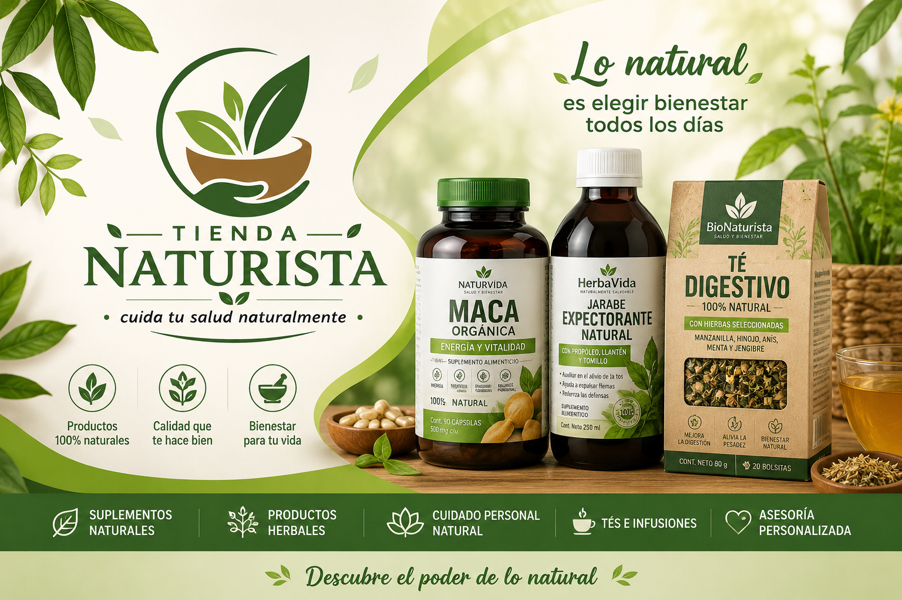
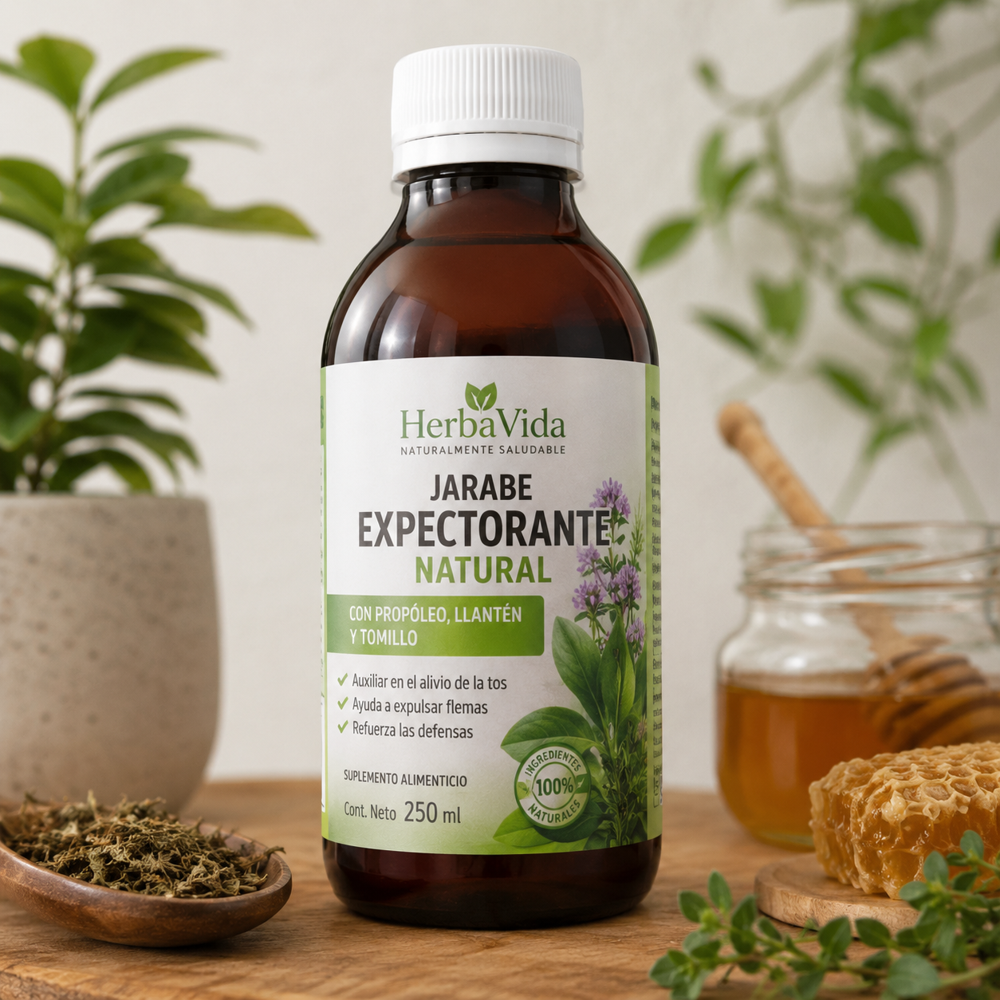
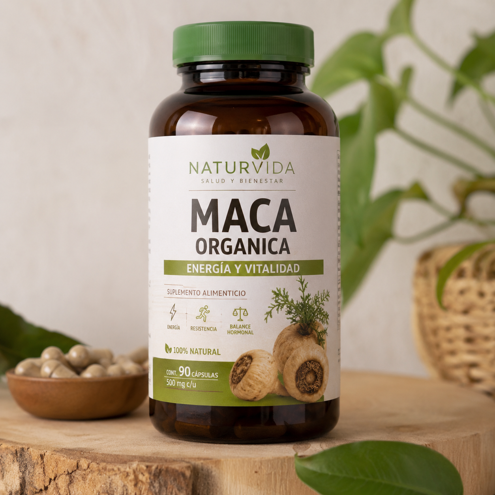
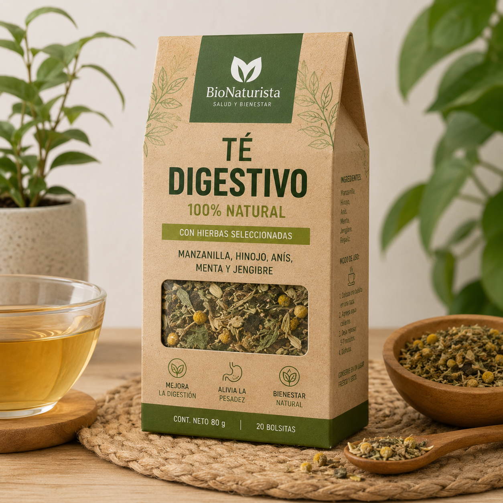

Es una tienda naturista que se enfoca en brindar ala comunidad productos naturales de alta calidad que contribuyan al bienestar fisico, mental y emocional de las personas.
Brindar ala comunidad productos naturales de alta calidad que contribuyan al bienestar fisico mental y emocional de las personas, ofreciendo una atencion personalizda basada en la conianza el respeto y el conocimiento basico de la medicina natural. La tienda busca no solo en vender productos, si no tambien orientar a sus clientes hacia estilos de vida mas sakudables, promoviendo el uso responsable de alternativas naturales.
Para el año 2030, la tienda naturista aspira consolidarse como unos de los negocios mas reconocidos en el sector por su compromiso con la salud natural, ampliando su variedad de productos y mejorando continuamente sus servicio.

Jarabe elaborado con ingredientes naturales como propóleo, llantén y tomillo. Su fórmula está diseñada para ayudar a aliviar la tos, facilitar la expulsión de flemas y apoyar las defensas del organismo de manera natural.

Suplemento alimenticio elaborado con maca orgánica, una raíz andina reconocida por sus propiedades energizantes. Ayuda a mejorar la vitalidad, la resistencia física y el bienestar general. Ideal para personas que buscan complementar su alimentación de forma natural.

Mezcla de hierbas seleccionadas como manzanilla, hinojo, anís, menta y jengibre. Ayuda a favorecer la digestión, reducir la sensación de pesadez después de las comidas y promover el bienestar digestivo.
📞 Teléfono: 311 6186 558
📧 Correo: tiendanaturista@gmail.com